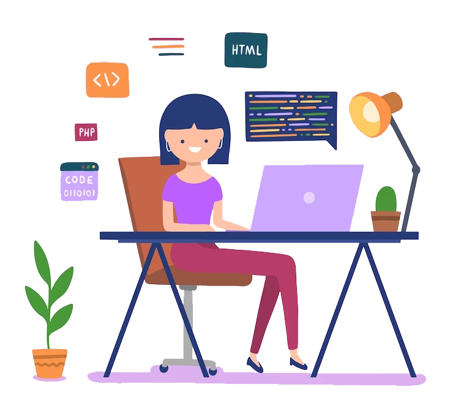

Por que aprender programação?
O setor da tecnologia é uma das áreas que mais cresce no Brasil e no mundo. Segundo pesquisa realizada pela Brasscom (Associação das Empresas de Tecnologia da Informação e Comunicação e de Tecnologias Digitais) em 5 anos a demanda por profissionais da área chegará a 797 mil novos talentos. Porém, o Brasil forma pouco mais de 50 mil pessoas na área, deixando claro que universidades não irão suprir a demanda necessária.
Quais os desafios enfretados pelas mulheres?
Apesar dos avanços nos últimos anos no setor de tecnologia ainda é um desafio para as mulheres entrarem em um mercado dominado por homens. Entre os principais desafios enfrentados, estão:
Falta de incentivo
As mulheres não costumam se enxergar em uma posição dentro desse universo o que afasta a entrada delas no ramo.
Diferenças salariais
A diferença salarial atingiu 22% em 2022, o que representa um crescimento, segundo dados do Instituto Brasileiro de Geografia e Estatística (IBGE). O que significa que uma brasileira recebe, em média, 78% do que ganha um homem. E isso vale mesmo quando as mulheres são mais escolarizadas.
Autocobrança e síndrome da impostora
A autocobrança excessiva pode levar as mulheres a se sentirem sobrecarregadas e pressionadas para atender a padrões inalcançáveis. E a síndrome de impostora faz com que pense que suas conquistas são resultados do acaso ou da sorte, em vez de suas próprias habilidades e méritos.
Discriminação e preconceito
As mulheres muitas vezes enfrentam discriminação e estereótipos em ambientes de trabalho dominados por homens. Como efeito, elas se sentem desvalorizadas e não respeitadas. E podem ser subestimadas e ter suas habilidades e conhecimentos questionados.
Falta de representatividade
A falta de representatividade também pode contribuir com a ideia de que mulheres e tecnologia não combinam e elas não são preparadas para ocupar esses cargos. As dificuldades para as mulheres se firmarem na área faz com que boa parte desista de seguir carreira.
Cursos De Tecnologia Para Mulheres
Confira abaixo alguns sites que oferecem cursos para mulheres iniciarem na carreira de tecnologia.